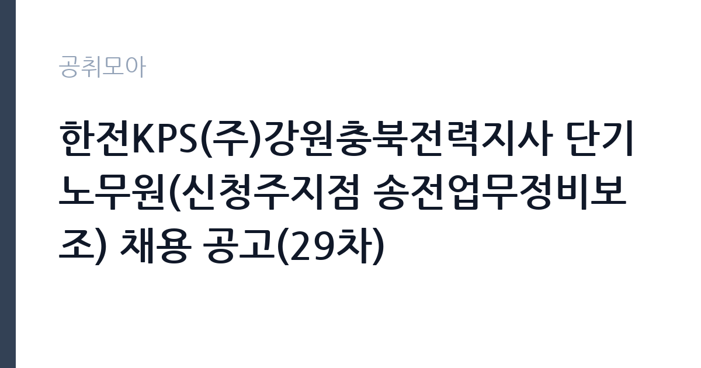

[공공기관] 한전KPS(주)강원충북전력지사 단기노무원(신청주지점 송전업무정비보조) 채용 공고(29차)
한전KPS(주) · 충북 · 마감 2026-09-30 (D-3) · 출처 잡알리오

한눈에 보는 모집 조건
| 기관 | 한전KPS(주) |
|---|---|
| 공고명 | 한전KPS(주)강원충북전력지사 단기노무원(신청주지점 송전업무정비보조) 채용 공고(29차) |
| 고용형태 | 일용직 |
| 근무지 | 충북 |
| 게시일 | 2026-09-28 |
| 마감일 | 2026-09-30 (D-3) |
지원자격, 이렇게 읽으세요
- 공공기관 채용공시
- 세부 조건은 원문 공고문 확인
단기노무원은 학력과 경력 제한이 없는 경우가 많아 진입 장벽이 낮은 편이지만, 정확한 지원 자격은 원문 공고문에서 확인하셔야 합니다. 송전업무정비보조는 송전 설비 정비 현장을 돕는 업무라 현장 근무가 가능한 신체 조건이 필요합니다. 29차 채용이라는 점에서 같은 사업장에서 공사에 따라 반복 채용이 이루어지고 있음을 알 수 있습니다. 신분증과 통장 사본 등 기본 서류만으로 접수하는 경우가 많으므로 공고문의 제출 서류 목록을 먼저 확인하십시오.
이 공고의 포인트
이 공고의 매력은 한전KPS라는 공기업 현장에서 일한다는 점입니다. 발전 설비 정비 전문 공기업이라 안전 교육과 현장 관리가 체계적이며, 이후 공기업 생산직이나 시설관리직 지원 시 현장 경험으로 활용할 수 있습니다. 접수 마감이 9월 30일로 임박해 경쟁자가 적은 편이며, 단기 계약이라 부담 없이 시작할 수 있습니다. 충북 일대 근무로 인근 거주자에게는 출퇴근이 수월한 자리입니다.
전형은 어떻게 진행되나
단기노무원 채용은 서류 접수 후 결격사유 확인과 간단한 면접 순으로 진행되는 경우가 많습니다. 29차 채용까지 이어진 것으로 보아 사업장 수요에 따른 수시 채용이므로 접수 마감일을 넘기면 다음 차수를 기다려야 합니다. 접수 방법과 제출 서류, 근무 시작일은 원문 공고문(한전KPS 홈페이지)에서 확인하십시오. 마감 하루 전 접수를 권장하며, 문의처에 전화해 접수 확인을 받는 것이 안전합니다.
이런 분께 추천해요
- 공기업 현장 경험을 쌓아 생산직이나 시설관리직 지원을 준비하는 분께 적합합니다.
- 단기간 집중 근무로 소득을 만들고 싶은 분께 잘 맞습니다.
- 충북 일대에 거주하며 출퇴근이 가능한 분께 좋습니다.
지원 전 체크리스트
- 접수 마감이 9월 30일이라는 점을 확인하고 오늘 안에 접수하셨습니까.
- 근무 장소와 출퇴근 수단, 통근 가능 여부를 점검하셨습니까.
- 현장 보조 업무라 야외 근무와 체력 소모가 따른다는 점을 확인하셨습니까.
- 계약 기간과 일당, 지급 방식을 원문에서 확인하셨습니까.
모집 일정과 제출 타이밍
접수 마감은 2026년 9월 30일이며 이후 합격자 발표와 근무 배치가 빠르게 진행됩니다. 단기노무원은 공사 일정에 맞춰 투입되므로 합격 후 대기 기간이 짧은 편입니다. 마감 당일 접수는 시스템 오류나 서류 누락에 대응할 시간이 없으므로 9월 29일까지 접수를 마치는 것이 좋습니다. 다음 차수 채용이 언제 나올지 알 수 없으므로 이번 기회를 놓치지 마십시오.
직무 이해하기: 공공기관
한전KPS는 발전 설비와 송전 설비 정비를 전담하는 공기업으로, 송전업무정비보조는 송전선로와 철탑, 변전 관련 설비 정비 현장을 돕는 역할입니다. 자재 운반과 현장 정리, 작업 보조, 안전 수칙 준수 등 현장 지원 업무가 중심이 됩니다. 송전 설비는 고전압을 다루는 현장이므로 안전 교육 이수와 보호구 착용이 필수이며, 작업 책임자의 지시에 따라 움직여야 합니다. 정비 보조 경험은 이후 공기업 기능직이나 시설관리 분야 지원 시 현장 이해도를 보여주는 재료가 됩니다.
자기소개서 작성 팁
단기노무원 지원 서류는 간결함이 생명입니다. 현장 근무 가능 여부와 출퇴근 거리, 관련 경험(건설 현장, 공장, 물류 등)을 짧게 적으십시오. 안전 수칙을 준수하겠다는 다짐과 체력에 대한 자신감을 한두 문장으로 표현하면 충분합니다. 공기업 현장 경험을 발판으로 삼겠다는 포부를 덧붙이면 성실한 인상을 줄 수 있습니다.
면접 준비 포인트
면접이 있다면 현장 투입 가능 여부를 확인하는 실무 질문이 중심입니다. 야외 근무와 이른 출근이 가능한지, 안전 수칙을 지킬 수 있는지 묻는 경우가 많습니다. 솔직하고 간결하게 답하는 것이 좋으며, 과장된 각오보다 출퇴근 계획과 근무 가능 기간을 구체적으로 말하는 것이 신뢰를 줍니다. 이전 현장 경험이 있다면 어떤 일을 했는지 짧게 설명할 준비를 해 두십시오.
급여·근무조건 읽는 법
원문에 보수 금액이 명시되어 있지 않으므로 공고문의 보수 항목에서 확인하셔야 합니다. 한전KPS 단기노무원은 일급제로 보수를 받는 것이 일반적이며, 과거 유사 채용에서는 최저임금 이상의 일당이 책정된 바 있습니다. 다만 이번 29차 채용의 정확한 일당과 근무 일수, 주휴수당과 4대 보험 적용 여부는 원문 공고문에서 확인하십시오. 수치로 명시되지 않은 보수는 추측하지 말고 채용 담당자 문의를 통해 확인하는 것이 안전합니다.
자주 묻는 질문
- 단기노무원은 얼마나 일합니까?
공사 일정에 따라 정해지며 계약 기간은 원문 공고문에서 확인하셔야 합니다. 같은 사업장에서 29차까지 반복 채용된 것으로 보아 공사에 따른 수시 수요가 있습니다. - 경력이 없어도 지원할 수 있습니까?
단기노무원은 보조 업무라 경력 제한이 없는 경우가 많습니다. 정확한 지원 자격은 원문 공고문의 응시 자격 항목에서 확인하십시오. - 29차 채용이란 무슨 뜻입니까?
같은 사업장에서 29번째로 진행하는 단기노무원 채용이라는 의미로, 공사 물량에 따라 반복 채용이 이루어지고 있음을 보여줍니다.
함께 보면 좋은 공고
[공공기관] 2026년 한국법무보호복지공단 울산지부 심리상담직(육아휴직대체직) 경력경쟁채용시험 공고 — 마감 2026-10-13[공공기관] [속리산] 속리산국립공원사무소 기간제(탐방해설) 직원 채용 재공고 — 마감 2026-10-08[공공기관] 발전공기업 통합실무지원단장 채용공고 — 마감 2026-10-08출처: 잡알리오 공개정보를 바탕으로 공취모아가 정리한 안내글입니다. 모집 조건·일정은 변경될 수 있으니 지원 전 반드시 원문 공고문을 확인하세요. 본 글은 정보 제공용이며 합격을 보장하지 않습니다.